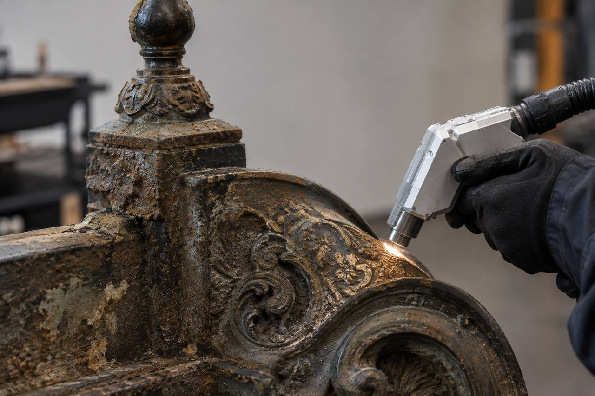

Локальное воздействие
Короткие импульсы помогают снимать загрязнение небольшими участками и не затрагивать лишнюю поверхность.
LZR / RESTORATION / IMPULSE
Работаем с загрязнением точечно и сначала проверяем режим на самом объекте. Импульсный лазер помогает контролировать воздействие там, где важны рельеф, кромки, маркировка и история поверхности.

01 / WHY IMPULSE
Импульсный режим позволяет работать короткими проходами и контролировать воздействие там, где важны рельеф, кромки, маркировка и история поверхности.
Короткие импульсы помогают снимать загрязнение небольшими участками и не затрагивать лишнюю поверхность.
Режим можно проверить на маленьком или скрытом участке до основной работы и согласовать результат.
Рельеф, кромки, орнамент и маркировка остаются видимыми для дальнейшей реставрации.
02 / OUR WORK
Наводите курсор на изображение: покажем, что было на поверхности и что делали с предметом.
03 / FAQ
Это зависит от состояния и требований к предмету. Мы обсуждаем, какой слой нужно снять, что сохранить, и проверяем решение на тестовом участке.
Крупный объект можно обрабатывать на месте. Для небольшой детали можно обсудить тестовый образец и формат передачи.
Общий вид, крупные планы загрязнения, размеры, материал и краткую историю объекта. Этого достаточно, чтобы начать разговор.
Пришлите фотографии. Скажем, нужен ли тест и какой формат работы имеет смысл.